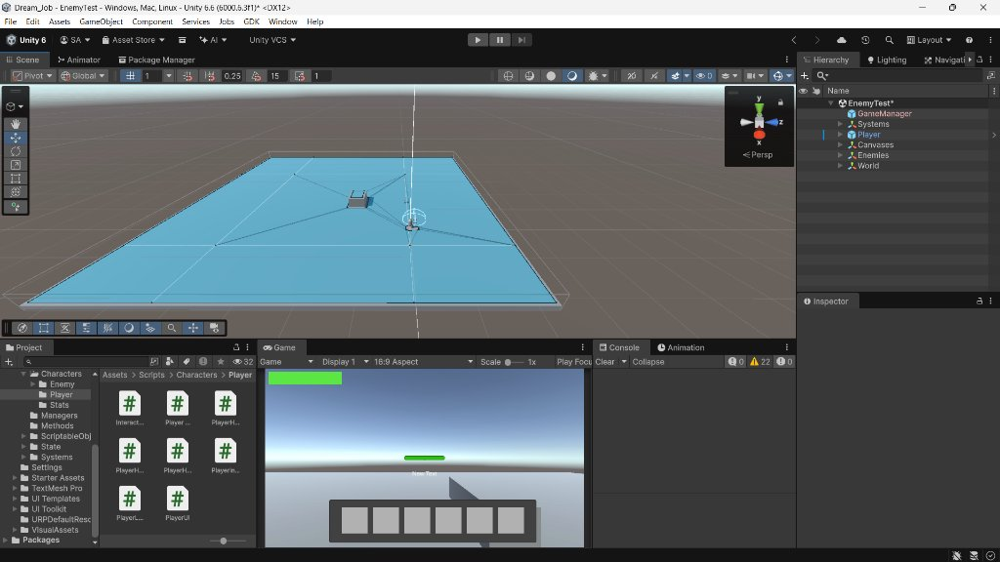
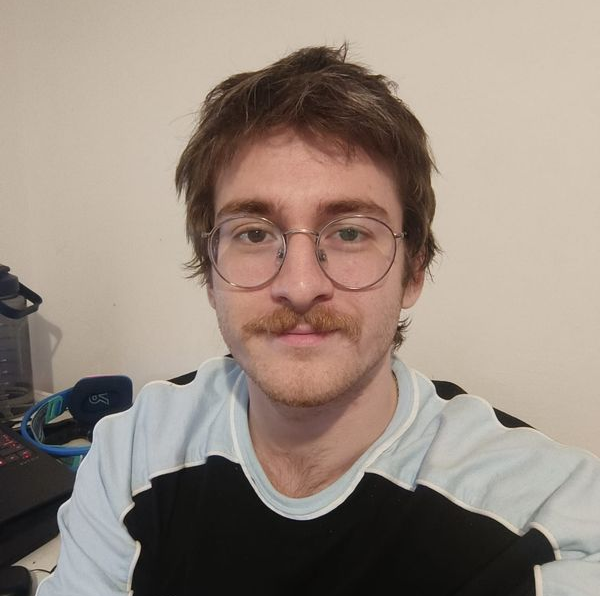
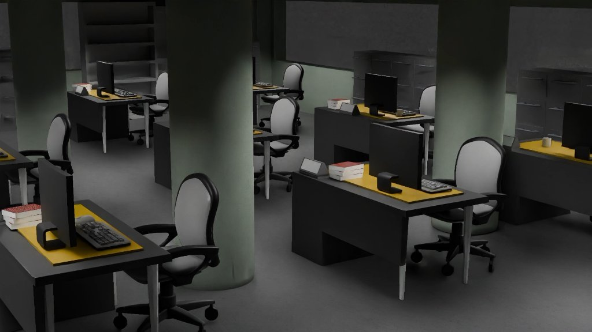
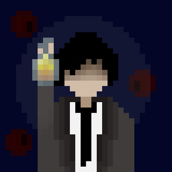
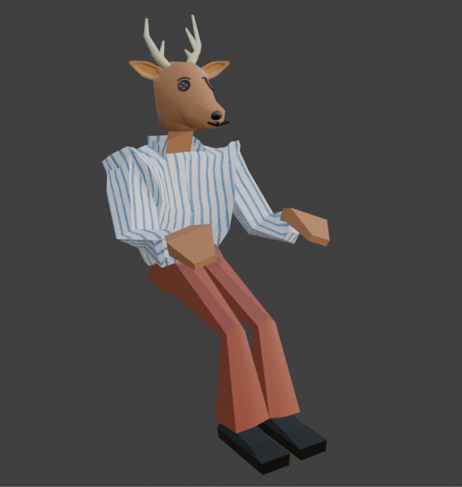
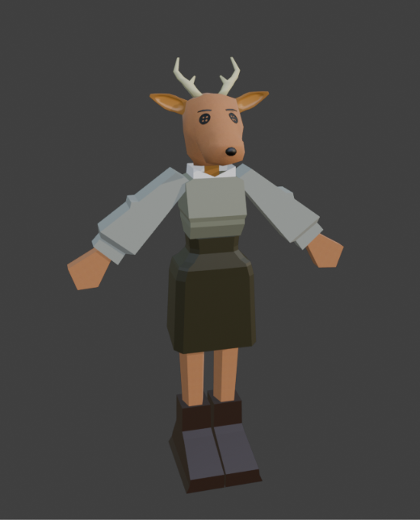

DREAMJOB
Game Developer • Mayıs 2026 – Devam Ediyor
Oyun mekanikleri, atmosferik dünyalar ve 3B karakterler üreten tutkulu bir geliştiriciyim. Unity ve Blender ile akılda kalıcı oyun deneyimleri tasarlıyorum.
PROJELERİMİ İNCELE →

Muğla Sıtkı Koçman Üniversitesi Dijital Oyun Tasarımı 2. sınıf öğrencisiyim. Oyun geliştirme, C# programlama, 3B modelleme ve animasyon alanlarında kendimi aktif olarak geliştiriyorum. Unity oyun motoru ve Blender üzerinde uzmanlaşarak Gaslit Eye ve Cute Office Simulator projelerini tamamladım; şu anda yeni oyunumuz DreamJob’da Game Developer olarak çalışıyorum.
Oynanış mekanikleri, karakter kontrolcüleri, durum makineleri (State Machine), ışık/kamera sistemleri ve QA test süreçleri.
Stilize 3B karakter modelleme, çevre ve ofis mobilyaları üretimi, karakter animasyonları ve Unity motoruna entegrasyon.
Türkçe: Ana Dil (5/5)
İngilizce: İleri Seviye (4/5)
Multi-Genre Gaming, Satranç (Chess), 3D Printing ve Fitness.

Game Developer • Mayıs 2026 – Devam Ediyor
3D Artist / Animator • Şubat – Mayıs 2026

Game Developer, Programmer, Tester • 2025
Cute Office Simulator projesinin tamamlanmasının ardından geliştirmeye başladığımız yeni oyun projemiz. Projede Game Developer olarak Unity oyun motorunda oynanış sistemleri, mekanik kurgusu ve oyun geliştirme süreçlerini yürütüyorum.
Stilize ve sevimli bir ofis atmosferinde geçen simülasyon oyunu. Projenin 3D Artist / Animator sorumlusu olarak tüm ofis mobilyalarını, çevre varlıklarını ve karakter animasyonlarını Blender ile hazırlayıp Unity motoruna entegre ettim ve projeyi tamamladık.


Atmosferik gerilim ve keşif oyunu. Projenin Game Developer, Programmer ve Tester rollerini üstlenerek C# oynanış mekaniklerini, kamera/ışık sistemlerini ve kalite kontrol (QA) süreçlerini geliştirdim. Oyun Itch.io üzerinde yayındadır.
Bodrum Güzel Sanatlar Fakültesi • Dijital Oyun Tasarımı Lisans Programı.
Cute Office Simulator projesinde 3D Artist / Animator olarak görev aldım; şu anda yeni oyunumuz DreamJob’da Game Developer olarak çalışıyorum.
Game Developer, Programmer ve Tester olarak C# mekaniklerini, ışıklandırma kurgusunu ve test süreçlerini tamamlayarak oyunu yayınladık.